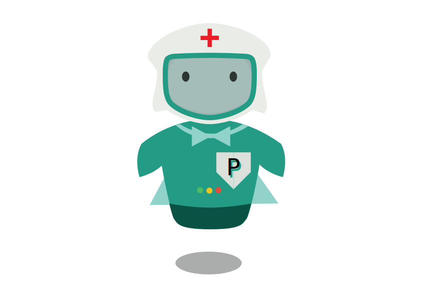
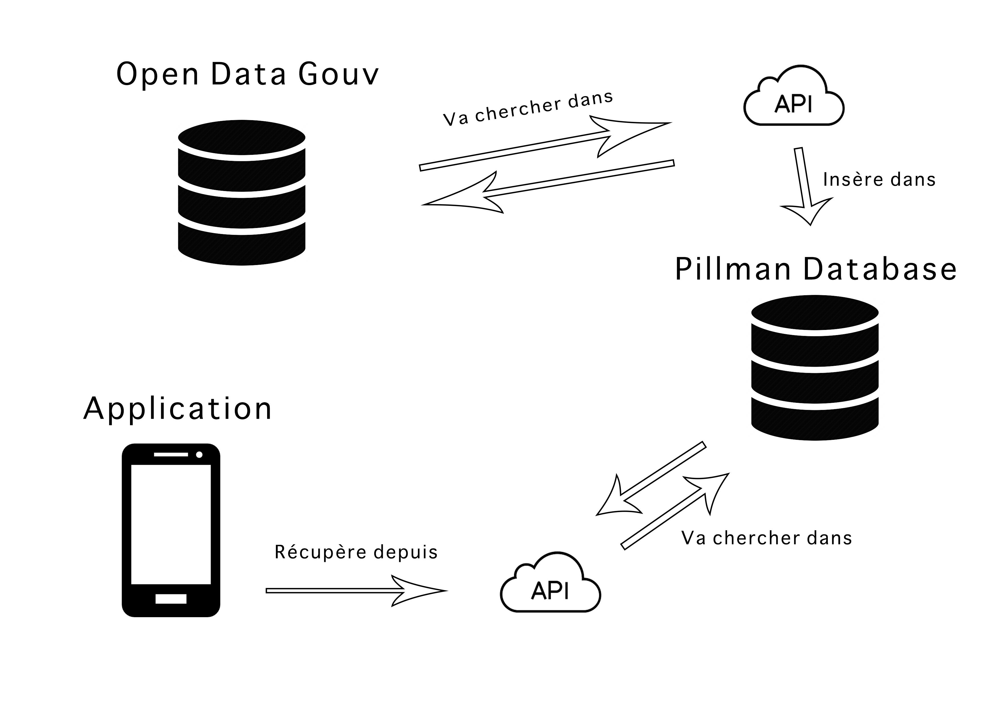

Présentation Application Perso
Pillman
Guillaume Barranco
Sommaire
- La naissance de Pillman
- Présentation de l'application
- Réflexion et architecture
- Choix des technologies : un challenge
- Les difficultés rencontrées
- Démonstration
- Objectif pour l'avenir
Un objectif de départ clair
=> Faire une application utile
Le monde infirmier
Les enjeux de l'hopital
- Correspondance nom du médicament / DCI
- Manque d'informations (forme, effets secondaires)
- Supports existants peu adaptés (Dictionnaire ou Internet)

Problématique
En tant qu'infirmière, comment puis-je facilement trouver la correspondance générique d'un médicament spécifique ainsi que ses informations secondaires, rapidement et sans Internet ?
Une solution : Pillman
- Accessibilité aux médicaments
- Source sûre : Données du Gouvernement Français
- Pas besoin d'Internet => stockage interne
- Système de recherche avancé
- Fonctionnalités et design épurés
- Mise à jour facile et sécurisée
Présentation de Pillman
Explication du nom et logo


Choix de conception
{kind=link}
{kind=link}
Choix de conception
{kind=link}
{kind=link}
Pillman : 3 Applications
- Application mobile
- API de processing des données Open Data
- API renvoyant les données à l'application
Architecture globale
Technologie de l'application mobile


Architecture de l'application
Composants
- Menu
- Maj
- Home
- ---------- search filters
- ---------- search input
- ---------- after search choices
- ---------- element presentation card
- Recent
- Options
Architecture de l'application
Services
- Api calls
- Database
- Session
- Util
Technologie de l'API en background

- Bonne connaissance
- Expérience
- Stable et facilement débuggable
{kind=link}
Technologie de l'API Pillman : Le Go
Opportunité : Le challenge d'un nouveau langage

- Nécessité d'une bonne gestion de la charge
- Langage compilé, rapide
- Fort typage = sécurité
- Bonne communauté (développé par Google)
Difficultés rencontrées / enjeux
- Pas de droit à l'erreur sur les données
- Les gestions des mises à jour
- Dépendance à l'API Open Data
- Recherche des données (autocomplete ? Mémoire, BDD ?)
Démo
Objectif pour l'avenir
- Fournir l'application à des bêta-testeurs
- Publication sur les stores
- Être utile à un maximum de monde
Remerciements
- Cassandre Biassadila (Infirmière)
- ECV Digital (Simon Aimelafille, Alexia Moity, Tiffany Assouline)